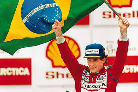

Ayrton Senna da Silva ONM • ComRB • CvMA • OME (São Paulo, 21 de março de 1960
– Bolonha, 1 de maio de 1994) foi um piloto de Fórmula 1, empresário e
filantropo brasileiro. Senna foi campeão da categoria de piloto três vezes,
em 1988, 1990 e 1991. Começou sua carreira competindo no kart em 1973 e em "carros de fórmula" em 1981,
quando venceu as Fórmulas Ford 1600 e 2000.
Em 1983 alcançou o título de campeão do Campeonato Britânico de Fórmula 3 batendo vários recordes.
Seu desempenho impulsionou sua ascensão à Fórmula 1,
fazendo sua primeira aparição na categoria no Grande Prêmio do Brasil de 1984 pela equipe Toleman-Hart.
Em sua primeira temporada, Senna pontuou em cinco corridas,
fechando o ano com treze pontos e a nona posição na classificação geral dos pilotos.
No ano seguinte, ingressou na Lotus-Renault, pela qual venceu seis
grandes prêmios ao longo de três temporadas.
Em 1988, juntou-se ao francês Alain Prost na McLaren-Honda,
com o qual teve grande rivalidade. Senna venceu oito etapas daquela temporada
e sagrou-se campeão mundial pela primeira vez. Após a polêmica final de 1989 com Prost
que resultou na segunda colocação do torneio, ele retomou o título em 1990,
vencendo novamente na temporada seguinte, tornando-se o piloto mais jovem
a conquistar um tricampeonato na Fórmula 1 até então. Em 1993,
Senna foi vice-campeão, vencendo cinco corridas. Transferiu-se para
a Williams em 1994, onde disputou apenas três etapas,
a última sendo o Grande Prêmio de San Marino, onde se acidentou e morreu,
no Circuito de Ímola. Ao todo, Senna participou de 161 grandes
prêmios na Fórmula 1, alcançando 41 vitórias, 80 pódios, 65 pole positions
e 19 voltas mais rápidas.
Fonte: Wikipedia

A imagem apresenta Ayrton Senna Levantando a Bandeira BrasileiraGP do Brasil de 1991